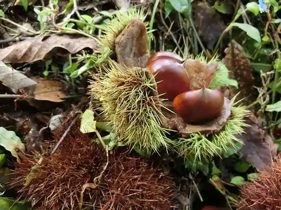
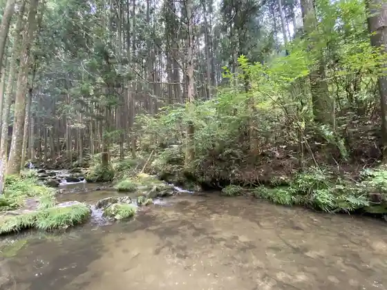
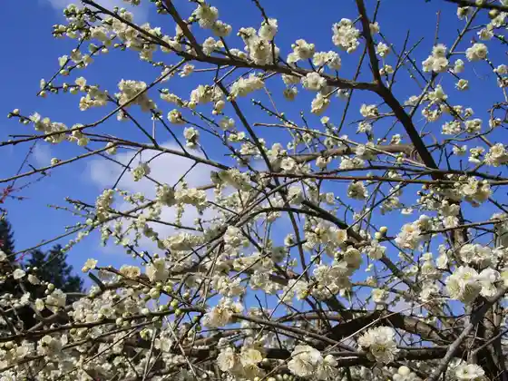

Koran Kei
Toyota, Aichi · 0565-62-1272 · Official / source link
Asuke Mitachi Kuri Sono
Toyota, Aichi · 0565-62-3855 · Official / source link

Nohara Kawa Kanko Center
Toyota, Aichi · 0565-90-3414 · Official / source link

Sai Hikari In Umezono
Toyota, Aichi · 0565-68-3653 · Official / source link

Toyota Museum
Toyota, Aichi · 0565-85-0900 · Official / source link
Sutoroberii Park Mifune
Toyota, Aichi · 0565-47-1830 · Official / source link
Mikawa Kogen Kyanpu Village
Toyota, Aichi · 0565-90-3530 · Official / source link
Honda Kinen Mingei Forest
Toyota, Aichi · 0565-46-0001 · Official / source link
Toyota Kuragaike Memorial Museum
Toyota, Aichi · 0565-88-8811 · Official / source link
Hafu Dam
Toyota, Aichi · 0565-90-3501 · Official / source link
Oi Taira Park
Toyota, Aichi · 0565-83-3200 · Official / source link
Takadoya Shitchi
Toyota, Aichi · 0565-83-3200 · Official / source link
Sanage Adobenchafiirudo
Toyota, Aichi · 0565-46-5551 · Official / source link
Kaori Seki Tera
Toyota, Aichi · 0565-62-0267 · Official / source link
Asuke Hachiman Shrine
Toyota, Aichi · 0565-62-0516 · Official / source link
Hirahata Onsen
Toyota, Aichi · 0565-65-3611 · Official / source link
Toyota Nogakudo
Toyota, Aichi · 0565-35-8200 · Official / source link
Toyota Konsatohoru
Toyota, Aichi · 0565-35-8200 · Official / source link
Mikawa Mizumi Terasu Korin
Toyota, Aichi · 0565-90-4120 · Official / source link
Takatsuki In
Toyota, Aichi · 0565-58-1629 · Official / source link
Horaisen Ginjo Workshop
Toyota, Aichi · 0565-83-3601 · Official / source link
Hyakunen Kusa
Toyota, Aichi · 0565-62-0100 · Official / source link
Toyota Mingei Kan
Toyota, Aichi · 0565-45-4039 · Official / source link
Kuramoto Masu Tsuka Miso
Toyota, Aichi · 0565-21-0028 · Official / source link
Kaori Koi no Kan
Toyota, Aichi · 0565-90-4120 · Official / source link
Oku Yahagi Onsen Sato
Toyota, Aichi · 0565-68-3653 · Official / source link
Urano Goshigaisha
Toyota, Aichi · 0565-45-0020 · Official / source link
Konjo Sawara
Toyota, Aichi · Official / source link
Sukaihoru Toyota
Toyota, Aichi · 0565-31-0451 · Official / source link
Toyota Sutajiamu
Toyota, Aichi · 0565-87-5200 · Official / source link
Oshiyama Unkai
Toyota, Aichi · Official / source link
Toyota Suigen SUP Kurabu (Obittosafu)
Toyota, Aichi · 0565-32-0575 · Official / source link
Men no Kihara Nama Hayashi
Toyota, Aichi · 0565-83-3200 · Official / source link
Otaki Gorge
Toyota, Aichi · 0565-58-1862 · Official / source link
Oshikawa Otaki
Toyota, Aichi · 0565-83-3200 · Official / source link
Ni Tatamigataki
Toyota, Aichi · 0565-77-8089 · Official / source link
Sanageyama
Toyota, Aichi · 0565-34-6642 · Official / source link
Tezu Kuri Kobo Yama Yuri
Toyota, Aichi · 0565-91-1186 · Official / source link
PA Lookout
Toyota, Aichi · 0565-80-5310 · Official / source link
Kawami Yakushiji Kawami Shiki Sakura Village
Toyota, Aichi · 0565-65-3808 · Official / source link
Ho Dono no Shichi Taki
Toyota, Aichi · 0565-90-2530 · Official / source link
Mikawa Mizumi
Toyota, Aichi · 0565-90-2530 · Official / source link
Sanage Shrine
Toyota, Aichi · 0565-45-1917 · Official / source link
Asahi Kogen Genki Village
Toyota, Aichi · 0565-68-2755 · Official / source link
Toyota Kagaku Taiken Kan
Toyota, Aichi · 0565-37-3007 · Official / source link
Toyota Chiikibunka Plaza
Toyota, Aichi · 0565-53-0671 · Official / source link
Nishiyama Park
Toyota, Aichi · 0565-31-2108 · Official / source link
Kuragaike Park
Toyota, Aichi · 0565-80-5310 · Official / source link
Aichiken Ryokka Center Showa Forest
Toyota, Aichi · 0565-76-2106 · Official / source link
Yahagi Dam / Oku Yahagi Mizumi
Toyota, Aichi · 0565-68-3653 · Official / source link
Asuke Shiro
Toyota, Aichi · 0565-62-0770 · Official / source link
Sanshu Asuke Residence
Toyota, Aichi · 0565-62-1188 · Official / source link
Inabu Onsen Donguri Baths
Toyota, Aichi · 0565-82-3135 · Official / source link
Roadside Station (Donguri no Sato Inabu)
Toyota, Aichi · 0565-82-3135 · Official / source link
Fuji no Kairo
Toyota, Aichi · 0565-76-6108 · Official / source link
Obara Shiki no Kairo
Toyota, Aichi · 0565-65-3808 · Official / source link
Nakada no Oka Farm Buruberii Farm
Toyota, Aichi · 070-8403-2558 · Official / source link
Kohara Fureai Park Shiki Sakura
Toyota, Aichi · 0565-65-3808 · Official / source link
Toyota Kohara Washi no Furusato (Art Museum Washi Kogei Taiken Kan)
Toyota, Aichi · 0565-65-2151 · Official / source link
Sanage Onsen
Toyota, Aichi · 0565-45-6111 · Official / source link
Toyota Art Museum
Toyota, Aichi · 0565-34-6610 · Official / source link
Matsudaira Toshogu Matsudaira Sato
Toyota, Aichi · 0565-58-1629 · Official / source link
Asuke no Streetscape (Ju Denken no Streetscape)
Toyota, Aichi · 0565-62-1272 · Official / source link
Toyota Hall
Toyota, Aichi · 0565-29-3345 · Official / source link